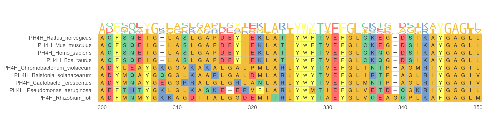
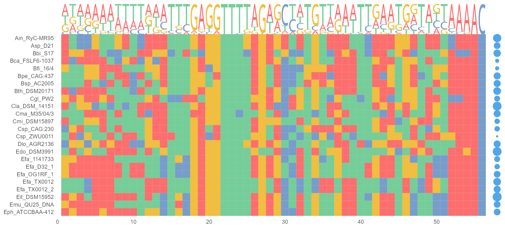
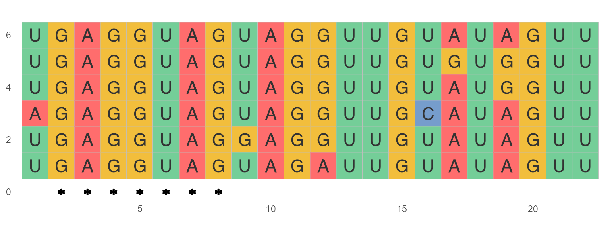

Annotation
2021-05-14
Annotations.RmdAnnotation Introduction
For sequence annotations, ggmsa supports individual modules to annotate sequence alignments. Annotated modules can be called by a + prefix. Automatically generated annotations that containing colored labels and symbols are overlaid on MSAs to indicate potentially conserved or divergent regions.
| Annotation modules | Type | Description |
|---|---|---|
| geom_seqlogo() | geometric layer | automatically generated sequence logos for a MSA |
| geom_GC() | annotation module | shows GC content with bubble chart |
| geom_seed() | annotation module | highlights seed region on miRNA sequences |
| geom_msaBar() | annotation module | shows sequences conservation by a bar chart |
| geom_helix() | annotation module | depicts RNA secondary structure as arc diagrams(need extra data) |
geom_seqlogo
Protein sequence logos annotation for MSA. Sequence logos play a major role in visualizing DNA, RNA and protein binding sites. In the following example, geom_seqlogo() module is used to display sequence logos between 300 and 350 sites. The + can be used to link main function ggmsa() and geom_seqlogo() module.
ggmsa(protein_sequences, 300, 350, char_width = 0.5, seq_name = T) +
geom_seqlogo(color = "Chemistry_AA")
geom_GC
geom_GC() module calculating the GC-content in DNA/RNA sequences. The sizes of bubbles are identical with GC-content.
nt_sequence <- system.file("extdata", "LeaderRepeat_All.fa", package = "ggmsa")
ggmsa(nt_sequence,font = NULL, color = "Chemistry_NT") +
geom_seqlogo(color = "Chemistry_NT") + geom_GC() + theme(legend.position = "none")
geom_seed
geom_seed() helps to identify microRNA seed region by asterisks or shaded area. The seed region is a conserved heptameric sequence that is mostly situated at positions 2-7 from the miRNA 5´-end.
ggmsa(miRNA_sequences, char_width = 0.5, color = "Chemistry_NT") +
geom_seed(seed = "GAGGUAG", star = TRUE)
ggmsa(miRNA_sequences, char_width = 0.5, seq_name = T, none_bg = TRUE) +
geom_seed(seed = "GAGGUAG")
geom_msaBar
geom_msaBar shows the highest frequency of amino acid residues at each position by a bar chart.
ggmsa(protein_sequences, 300, 350, char_width = 0.5, seq_name = T) + geom_msaBar()
geom_helix
ggmsa supports plotting RNA secondary structure as arc diagram by reference to R4RNA. For example, adding a structure arc above diagram multiple sequence alignment helps to identify the base pair conservation and co-variation.
known_file <- system.file("extdata", "vienna.txt", package = "R4RNA")
known <- readSSfile(known_file, type = "Vienna" )
cripavirus_msa <- system.file("extdata", "Cripavirus.fasta", package = "ggmsa")
ggmsa(cripavirus_msa, font = NULL, color = "Chemistry_NT", seq_name = F, show.legend = T, border = "white") +
geom_helix(helix_data = known)